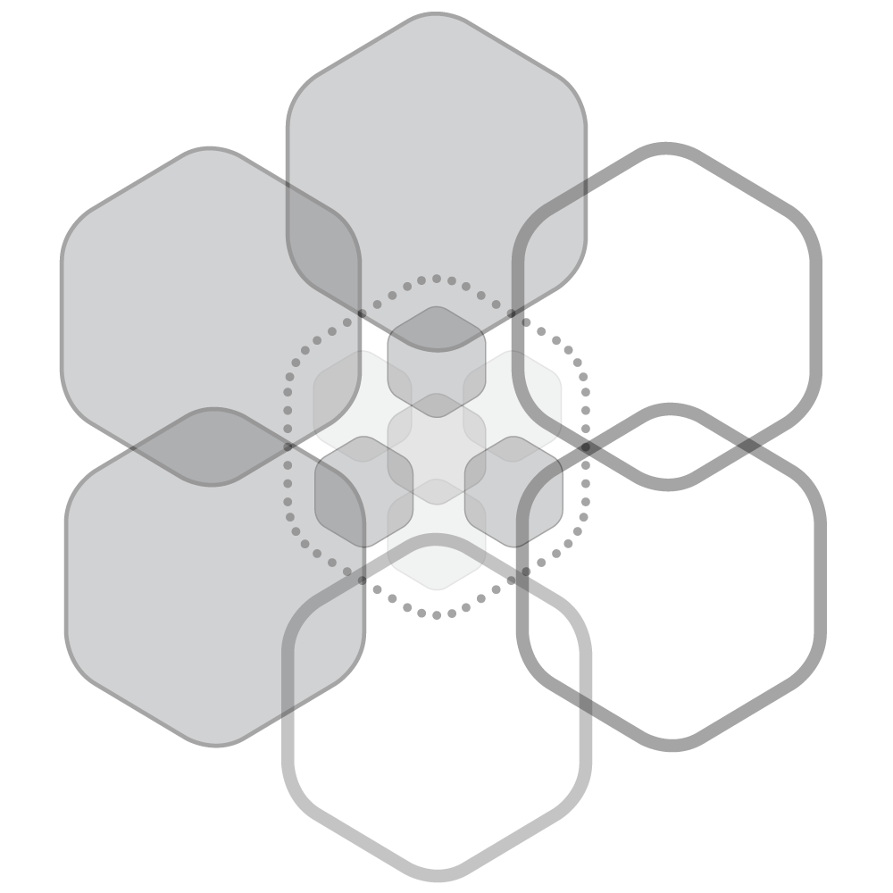
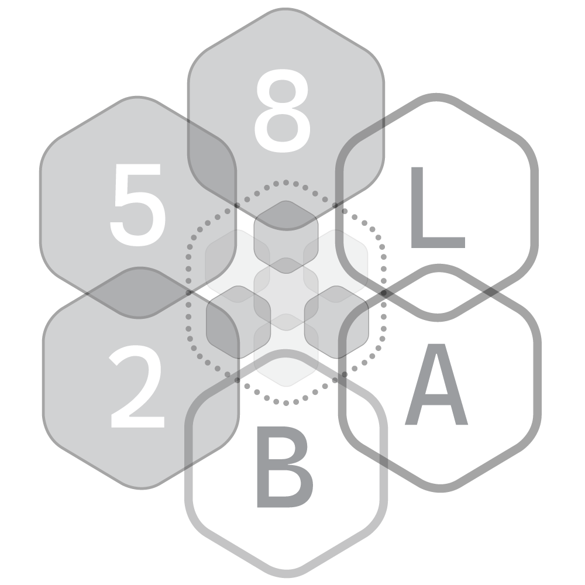

Search for a place or follow a question about the city. Select a place on the map to see its evidence and explore nearby Buildings and Lots.

Links reopen this configuration using the available Atlas data.